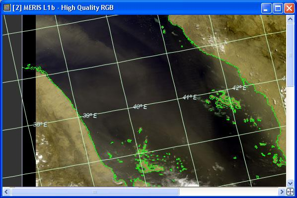
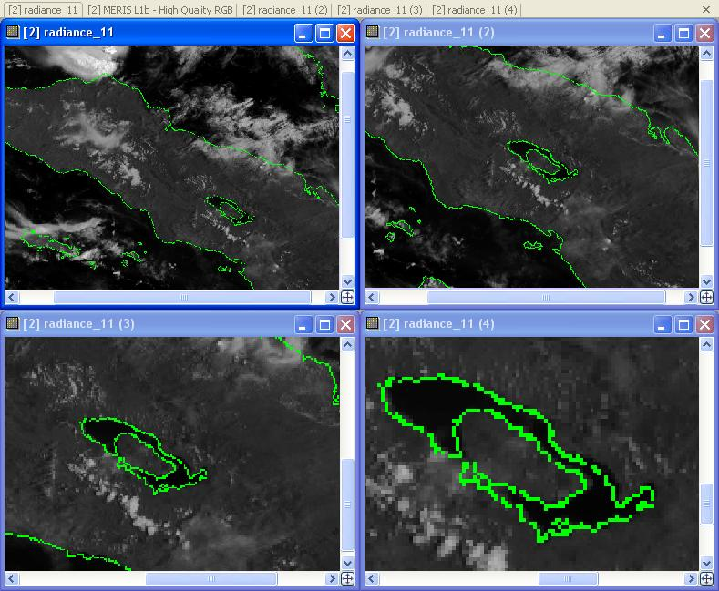
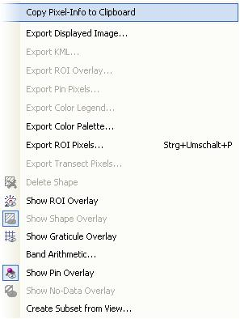

| Image View | |
The image view displays the sample values of raster datasets such as bands and tie-point grids as an image.

In VISAT 3.0, the handling and inspection of products has been tremendously enhanced. Be
sure to get acquainted with the concept of the Navigation Window and the GUI enhancements. Note that the image view window now has scrollbars.
So, if you adjust the size of the image view, you are also able to change the visible part of the image by moving
the scrollbars.
In the bottom right corner of the image view window, there is a small button:  . A click on this button will adjust the magnification of the image to
fit into the window. This has the same effect like using the "Zoom
All" icon of the Navigation Window.
. A click on this button will adjust the magnification of the image to
fit into the window. This has the same effect like using the "Zoom
All" icon of the Navigation Window.
Besides this, there are two new important tools to navigate through an image
and to inspect pixels in detail:
It is now possible to open more than one window of the same band to have several views on the band. This can be done by right-clicking on the band name in the Product Scene View. The windows will be numbered according to their appearance:

When you right-click the mouse over the image view a popup menu comes up:

Entries:
Note: The Copy Pixel Info to Clipboard command copies information as tabulator-separated text into the clipboard and may therefore be pasted directly into a spreadsheet application (e.g. MS Excel).
Note: The band to be used for each of the channels in the current RGB image view can be changed at any time in the Contrast Stretch / Color Palette window.